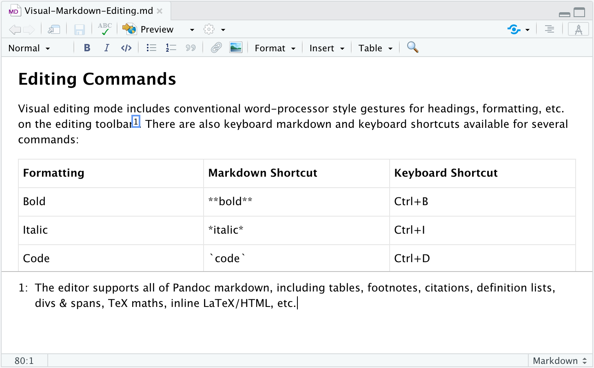
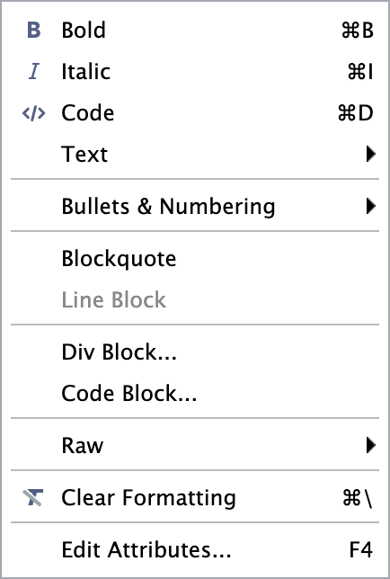
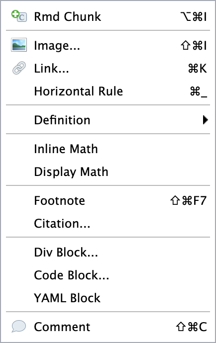
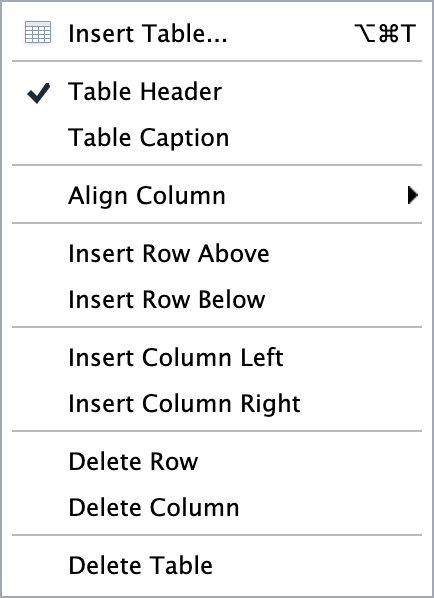
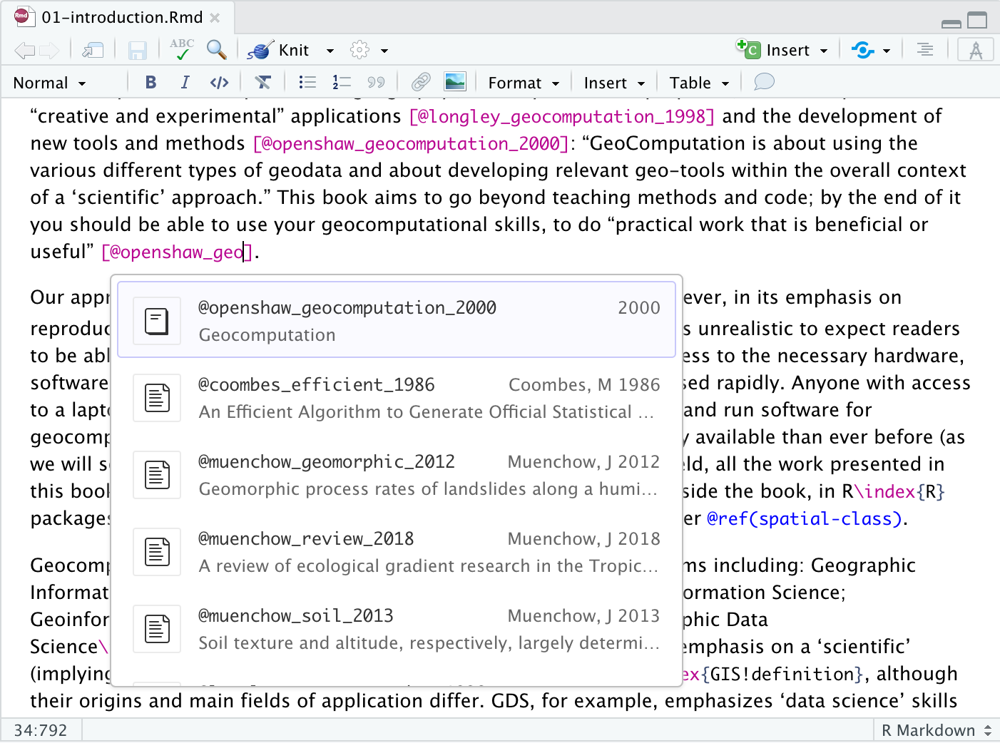
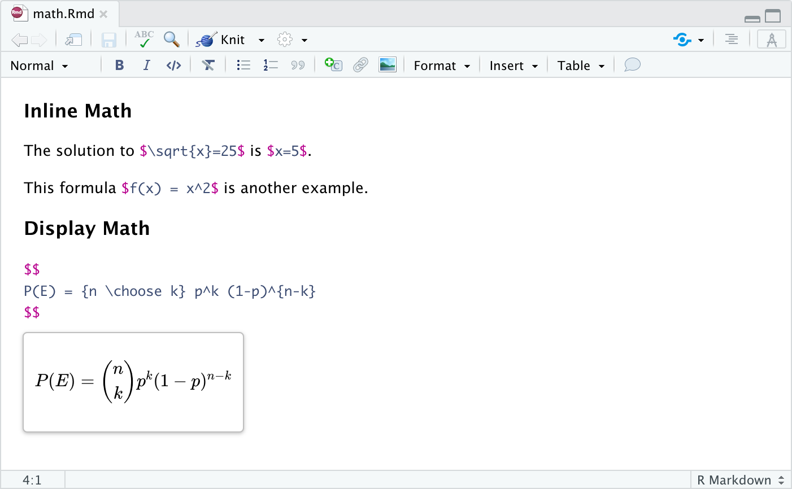
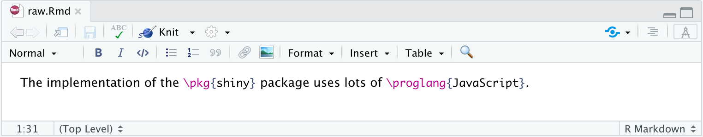

Visual Markdown Editing
J.J. Allaire
April 2020
Overview
RStudio v1.4 includes an experimental visual markdown editing mode. Users of R Markdown that write longer-form documents often use tools like Typora (or even Google Docs) for composition. Visual editing mode provides an alternative that is seamlessly integrated with RStudio. Features of visual mode include:
Support for all of Pandoc markdown, including tables, footnotes, citations, divs/spans, definition lists, id/class attributes, LaTeX math, and inline TeX/HTML.
Markdown expressions (e.g.
##,**bold**,etc.) can be used within the visual editor for formatting.Tight integration with source editing (when you switch between modes your editing location is preserved).
Visual mode is currently only useful for composition (code chunks are not executable). As such, the feature is aimed mostly at savvy/experienced markdown users that want more productive editing of long-form documents and less so at newer users and/or users that are primarily executing code. We plan on adding support for code execution in a future version of RStudio.
Getting Started
Visual markdown editing is currently only available in the daily build of RStudio (version 1.4.286 or later). You can download the most recent daily build here: https://dailies.rstudio.com.
Visual markdown editing is not available by default. To enable it, use the R Markdown tab of RStudio Preferences:

Once you’ve enabled visual editing, you can switch between source and visual mode using the button at the top-right of the document toolbar (there is also a keyboard shortcut, Ctrl+Shift+F8, that can be used to switch modes):

Editing Basics
Visual mode has direct editing support for all of Pandoc markdown. Standard formatting commands (headings, bold, italic, etc.) work just the way they do in a conventional word-processor. You can access editing commands using either the toolbar or via shortcuts.
Editor Toolbar
The editor toolbar includes buttons for the most commonly used formatting commands:

Additional commands are available on the Format, Insert, and Table menus:
| Format | Insert | Table |
|---|---|---|
|  |  |  |
Editor Shortcuts
In addition to using the toolbar, you can also use markdown syntax directly. When the editor sees markdown shortcuts it automatically applies the associated formatting.
For example, enclose **bold**text in asterisks or type ## and press enter to create a second level heading. Note that if you didn’t intend this, you can use backspace to revert the applied formatting.
There are also keyboard shortcuts available for several commands. Here are the currently supported shortcuts (note that you should substitute Cmd for Ctrl on Mac systems):
| Formatting | Keyboard Shortcut | Markdown Shortcut |
|---|---|---|
| Bold | Ctrl+B | **bold** |
| Italic | Ctrl+I | *italic* |
| Code | Ctrl+D | `code` |
| Strikeout | ~~strike~~ | |
| Subscript | ~sub~ | |
| Superscript | ^super^ | |
| Heading | ## | |
| Blockquote | > | |
| Code Block | ``` | |
| Horizontal Rule | Ctrl+_ | *** |
| Bullet List | - | |
| Ordered List | 1. | |
| List Check | [x] | |
| Definition | : | |
| Link | Ctrl+K | [text](href) or <href> |
| Image | Shift+Ctrl+I | |
| Footnote | Shift+Ctrl+F7 | |
| R Code Chunk | Alt+Ctrl+I | |
| Table | Alt+Ctrl+T | |
| Edit Attributes | F4 | |
| Clear Formatting | Ctrl+\ |
Typography
Most markdown formats support smart typography, which causes straight quotes to be interpreted as curly quotes, – as en-dashes, — as em-dashes, and … as ellipses. Visual mode supports these same transformations (so when you type — it becomes an em-dash). If you didn’t intend for this transformation to occur just hit backspace and it will be reverted.
Citations & Footnotes
You can include citations using the standard Pandoc syntax for citations:

You can include footnotes using the Insert -> Footnote command. Footnote editing occurs in a pane immediately below the main document.
TeX Math & Commands
TeX math is authored using standard Pandoc markdown syntax (the editor will automatically recognize the syntax and create the appropriate constructs). For example, here’s some inline and display math:

You can also include raw TeX commands when authoring in visual mode. The raw markup will be automatically recognized and syntax highlighted For example:

You can also include inline and block raw content of any output format supported by Pandoc (e.g. html, rtf or openxml) using the commands on the Format -> Raw menu
Pandoc Attributes
Several of Pandoc’s block types (e.g. headings, code blocks, and divs) enable you to specify a set of custom attributes. Attributes include IDs, class names, as well as arbitrary key-value pairs that are passed through to output formats (e.g. as attributes for HTML tags). For these block types, an edit button will appear at the the top right when your cursor is within the block:

Note that any ID as well as the first class specified within the attributes are also displayed. Click the edit button or use the F4 keyboard shortcut to edit the attributes.
Review & Commenting
When reviewing an R Markdown document you often want to provide inline comments with suggested revisions. This is possible in R Markdown using HTML comments (which are ignored by all output formats). Visual mode includes a command for inserting HTML comments as well as special highlighting treatment to easily parse out editing comments from surrounding text.

You can insert an HTML comment using the Comment button on the toolbar or via the Ctrl+Shift+C keyboard shortcut. Remember, HTML comments won’t show up in rendered output so they are ideal both for review but also for leaving yourself to-do notes within a document.
Bookdown & Blogdown
The bookdown package includes markdown extensions for cross-references and part headers. The blogdown package also supports cross-references as well as inline Hugo shortcodes. It’s also possible to use blogdown with an alternate markdown engine (as opposed to using Pandoc). All of these extensions and alternate configurations are supported by visual mode.
Cross References
Bookdown cross-references enable you to easily link to figures, equations, and even arbitrary labels within a document. In raw markdown, you would for example write a cross-reference to a figure like this: \@ref(fig:label). Cross-references are largely the same in visual mode, but you don’t need the leading \ (which in raw markdown is used to escape the @ character). For example:

The leading \ will be automatically written into the markdown source by the visual editor. See the bookdown documentation for more information on cross-references.
Part Headers
Bookdown recognizes level 1 headers written with a (PART) prefix as book parts (analogous to the LaTeX \part{} command). These work the same in visual mode, but if you use the special extension for unnumbered part headers (written in raw markdown as (PART\*), you don’t need to include the escape character for the asterisk. You also should use the explicit {.unnumbered} class as opposed to the shorthand {-}. For example:

See the bookdown documentation for more information on part headers.
Hugo Markdown
Under the hood, Blogdown makes use of the Hugo static site generation framework. This introduces a couple of special considerations for visual mode described below.
Shortcodes
Hugo includes support for shortcodes, which are special macros generally used to render more complex objects (e.g. tweets or videos). You can include shortcodes in visual mode by just typing them with the normal Hugo syntax:

See the blogdown documentation for more information on using shortcodes.
Markdown Processing
If you use normal R Markdown files (.Rmd) within a blogdown website, their markdown is processed by Pandoc. However, if you use a plain markdown file (.md) or an R Markdown file with a special extension (.Rmarkdown), then markdown is processed by Hugo rather than pandoc.
In this case, RStudio will recognize that you aren’t using Pandoc, and adapt the editor’s markdown features accordingly (providing only the features supported by the current Hugo markdown engine, e.g. blackfriday). The editor will also automatically enclose LaTeX math in backticks (required by blogdown when Pandoc isn’t rendering markdown).
Note that if RStudio doesn’t correctly detect the use of Hugo’s markdown processor, you can explicitly enable this for an individual document using a special format comment. For example:
<!-- -*- mode: blackfriday; doctype: blogdown -*- -->You can learn more about format comments in the Markdown Conversion section below.
Document Navigation
Editor Outline
The editor outline enables you to quickly navigate between sections of larger documents. An outline item is included for each heading within the document. You can make the outline visible using the outline button next to the visual mode button:

Find/Replace
You can find and replace text within visual mode using the Find button located at the far right of the visual editing toolbar:

Note that Find/Replace will only locate matches within normal text (code blocks are not searched).
Display Options
Visual mode uses a content width and font size generally comfortable for writing (similar to that of Google Docs). You can adjust the maximum content width (by default it’s 700 pixels) as well as the font size (by default the same as the IDE) within the R Markdown -> Advanced preferences.
Markdown Conversion
Visual editing mode generates markdown using Pandoc. This means that in some cases your markdown will be rewritten to conform to standard Pandoc idioms. For example, Pandoc writes footnotes at the end of the document, inserts 3 spaces after list bullets, and automatically escapes characters that might be used for markdown syntax.
While this might be bothersome at first, if you decide that visual editing mode is useful for your workflow it’s probably best to just adapt to writing your own markdown the same way that Pandoc does. If any of Pandoc’s idioms are particularly troublesome, let us know and we’ll see if we can add an option to override the default behavior.
Modes & Extensions
Visual editing mode can author all of the markdown variants supported by Pandoc. By default, features associated with standard Pandoc markdown are enabled. You can change this behavior by including an Emacs-style magic comment in your markdown document. For example, to specify that you’d like to create GitHub Flavored Markdown (Pandoc’s “gfm” variant), add this comment:
<!-- -*- mode: gfm -*- --> Add the comment while in source mode (it will be hidden while editing in visual mode). Note that for R Markdown (Rmd) files this comment should be located immediately after the YAML metadata block at the top of the document.
Markdown variants supported by the editor include:
- markdown
- markdown_strict
- markdown_phpextra
- commonmark
- gfm
- blackfriday
You can also specify that particular extensions be enabled or disabled. For example, to specify GitHub Flavored Markdown with additional support for TeX math and raw Tex, you would use this comment:
<!-- -*- mode: gfm; extensions: +tex_math_dollars+raw_tex -*- --> Alternatively, to specify standard Pandoc markdown without TeX math and raw TeX, you would use this comment (note the minus sign before the disabled extensions):
<!-- -*- mode: markdown; extensions: -tex_math_dollars-raw_tex -*- --> You can read more about Pandoc variants and extensions in the Pandoc Markdown documentation.
Document Types
The R Markdown ecosystem has a wide variety of document formats, most of which rely on the core set of Pandoc markdown extensions. However, there are a number of formats that include additional markdown extensions (for example, the cross-reference extension introduced by the bookdown package is also supported by the blogdown and distll packages).
RStudio can generally detect which type of document is being edited and enable the requisite extensions. In the case that this doesn’t work as expected, you can specify a doctype in the format comment to make it explicit. For example:
<!-- -*- doctype: blogdown -*- -->Available doctypes include xref, bookdown, blogdown, and hugo (you can specify more than one doctype by separating them with commas). The xref doctype specifies any document that supports bookdown cross-references (e.g. distill) and is implied by the bookdown and blogdown doctypes. The hugo doctype indicates a document that supports Hugo shortcodes, and is also implied by the blogdown doctype.
Again, you typically don’t need to use an explicit doctype, since RStudio can generally automatically detect this based on the type of your current project.
Line Wrapping
By default, the visual editor writes Markdown with no line wrapping (paragraphs all occupy a single line). This matches the behavior of markdown source editing mode within RStudio.
If however you prefer to have paragraphs wrapped at a particular column (e.g. 72 or 80). You can set an option to this effect within the R Markdown preferences pane where visual mode is enabled. You can also set this behavior on a per-document basis by including a fill-column variable within an Emacs-style magic comment. For example:
<!-- -*- mode: markdown; fill-column: 72 -*- --> Note that there are some disadvantages to setting a fill-column. First, editing paragraphs in source mode will be less convenient (because line wrapping will need to done manually). Second, tables with many explicitly sized columns (more than 10 or so) may be written by Pandoc as HTML rather than markdown.
Known Limitations
There are a handful of Pandoc markdown extensions not currently supported by visual editing. These are infrequently used extensions so in all likelihood won’t affect documents you edit, but are still worth noting.
| Extension | Example | Behavior |
|---|---|---|
| Inline footnotes | ^[inline footnote] | Converted to numeric footnote. |
| Footnote identifiers | [^longnote] | Converted to numeric footnote. |
| Example lists | (@) First example | Read/written as ordinary numbered lists. |
| Auto-list numbers | #. First item | Read/written as ordinary numbered lists. |
| Reference links | This is a [link] | Converted to ordinary links. |
| Pandoc title block | % My Title | Ignored (and dropped from document). |
In addition, the various MultiMarkdown extensions to Pandoc are not supported (note that these extensions are disabled by default in Pandoc markdown). MultiMarkdown title blocks are ignored and dropped, and MultiMarkdown link attributes and header identifiers are read and converted to Pandoc markdown equivalents.